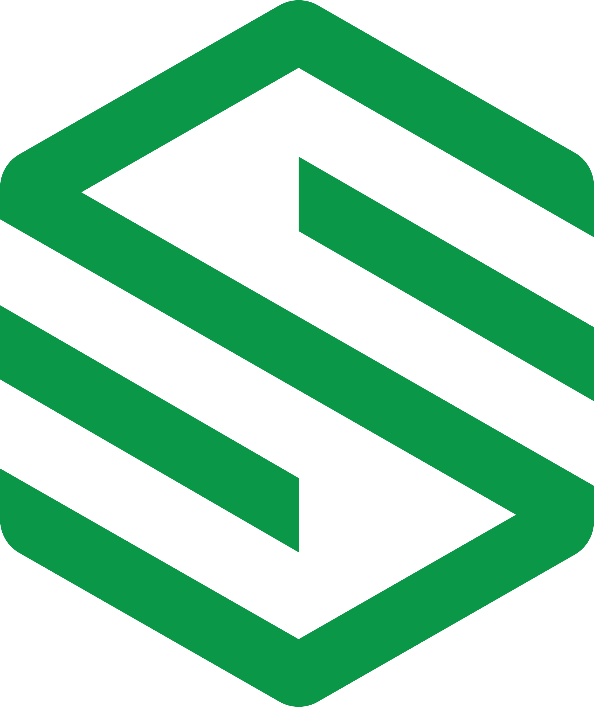

Sulmara
- Sulmara est une entreprise internationale de services offshore pour le secteur de l’énergie.
- Elle utilise des technologies innovantes et autonomes pour la collecte de données marines.
- Elle met l’accent sur la réduction de l’impact environnemental et des risques projets.